Save/load SpatialFeatureExperiment to/from file
Lambda Moses
2025-02-06
Source:vignettes/Overview.Rmd
Overview.RmdOverview
The SpatialFeatureExperiment (SFE) class extends
SpatialExperiment to foreground the spatial aspect of the
data by incorporating Simple Feature geometries and geometric operations
on the whole object like a multi-layered map. It also introduces new
image classes to support the geospatial raster tradition
(terra package) and the image processing package
(EBImage package).
As spatial -omics data is growing in size, some components of the SFE
object are not loaded into memory unless necessary. This includes gene
count matrix and assays that are DelayedArrays and
BioFormats images only whose metadata is loaded into memory, as well as
transcript spot geometries for smFISH-based technologies in some cases.
We plan to expand the out of memory functionalities in the near future.
As a result, when the SFE object is saved to RDS and shared with others,
often the out of memory components break because the original file is
unavailable or is tied to some absolute path.
A goal of alabaster.sfe is to make SFE objects more
portable for sharing, and to avoid recomputing affine transformations
and spatial statistics after reading the data from the original output
such as from Space Ranger. It is a contribution to the
alabaster suite of packages from ArtifactDB. Another goal is
interoperability with Python and other languages as in the goal of
ArtifactDB.
Xenium demo
library(alabaster.sfe)
library(Voyager)
library(SFEData)
library(SingleCellExperiment)
library(scater)
library(sf)
library(fs)
library(spdep)
set.SubgraphOption(FALSE)Here we show a small example on a subset of Xenium data, doing some basic spatial analyses.
fp <- tempfile()
x2 <- XeniumOutput("v2", file_path = file.path(fp, "xenium2"))
#> see ?SFEData and browseVignettes('SFEData') for documentation
#> loading from cache
#> The downloaded files are in /tmp/Rtmpd28CdE/file31c05a7a538c/xenium2/xenium2
sfe <- readXenium(x2, add_molecules = TRUE)
#> >>> Must use gene symbols as row names when adding transcript spots.
#> >>> Cell segmentations are found in `.parquet` file(s)
#> >>> Reading cell and nucleus segmentations
#> >>> Making MULTIPOLYGON nuclei geometries
#> >>> Making POLYGON cell geometries
#> Sanity checks on cell segmentation polygons:
#> >>> ..found 132 cells with (nested) polygon lists
#> >>> ..applying filtering
#> >>> Checking polygon validity
#> >>> Saving geometries to parquet files
#> >>> Reading cell metadata -> `cells.parquet`
#> >>> Reading h5 gene count matrix
#> >>> filtering cellSeg geometries to match 6272 cells with counts > 0
#> >>> filtering nucSeg geometries to match 6158 cells with counts > 0
#> >>> Reading transcript coordinates
#> >>> Converting transcript spots to geometry
#> >>> Writing reformatted transcript spots to disk
#> >>> Total of 116 features/genes with no transcript detected or `min_phred` < 20 are removed from SFE object
#> >>> To keep all features -> set `min_phred = NULL`
colData(sfe)
#> DataFrame with 6272 rows and 9 columns
#> transcript_counts control_probe_counts control_codeword_counts
#> <integer> <integer> <integer>
#> abclkehb-1 26 0 0
#> abcnopgp-1 35 0 0
#> abcobdon-1 39 0 0
#> abcohgbl-1 45 0 0
#> abcoochm-1 61 0 0
#> ... ... ... ...
#> odmfjplg-1 12 0 0
#> odmfpjop-1 3 0 0
#> odmglico-1 40 0 0
#> odmgoega-1 25 0 0
#> odmgojlc-1 13 0 0
#> unassigned_codeword_counts deprecated_codeword_counts total_counts
#> <integer> <integer> <integer>
#> abclkehb-1 0 0 26
#> abcnopgp-1 0 0 35
#> abcobdon-1 0 0 39
#> abcohgbl-1 0 0 45
#> abcoochm-1 0 0 61
#> ... ... ... ...
#> odmfjplg-1 0 0 12
#> odmfpjop-1 0 0 3
#> odmglico-1 0 0 40
#> odmgoega-1 0 0 25
#> odmgojlc-1 0 0 13
#> cell_area nucleus_area sample_id
#> <numeric> <numeric> <character>
#> abclkehb-1 39.6923 18.9656 sample01
#> abcnopgp-1 60.7352 29.5322 sample01
#> abcobdon-1 55.4519 20.9977 sample01
#> abcohgbl-1 79.9266 24.4295 sample01
#> abcoochm-1 70.6244 34.1833 sample01
#> ... ... ... ...
#> odmfjplg-1 63.03813 29.35156 sample01
#> odmfpjop-1 9.16672 9.16672 sample01
#> odmglico-1 82.54563 16.07563 sample01
#> odmgoega-1 112.84547 5.73484 sample01
#> odmgojlc-1 47.00766 12.19219 sample01
colGraph(sfe, "knn5") <- findSpatialNeighbors(sfe, method = "knearneigh", k = 5)
sfe <- logNormCounts(sfe, size_factors = sfe$cell_area)
sfe <- runMoransI(sfe, colGraphName = "knn5")
sfe <- colDataMoransI(sfe, features = c("transcript_counts", "cell_area"))
top_moran <- rownames(sfe)[which.max(rowData(sfe)$moran_sample01)]
sfe <- runUnivariate(sfe, type = "localmoran", features = top_moran)Global spatial statistics for gene expression are stored in
rowData.
rowData(sfe)
#> DataFrame with 398 rows and 5 columns
#> ID Symbol
#> <character> <character>
#> ABCC11 ENSG00000121270 ABCC11
#> ACE2 ENSG00000130234 ACE2
#> ACKR1 ENSG00000213088 ACKR1
#> ACTA2 ENSG00000107796 ACTA2
#> ACTG2 ENSG00000163017 ACTG2
#> ... ... ...
#> UnassignedCodeword_0461 UnassignedCodeword_0.. UnassignedCodeword_0..
#> UnassignedCodeword_0469 UnassignedCodeword_0.. UnassignedCodeword_0..
#> UnassignedCodeword_0479 UnassignedCodeword_0.. UnassignedCodeword_0..
#> UnassignedCodeword_0488 UnassignedCodeword_0.. UnassignedCodeword_0..
#> UnassignedCodeword_0497 UnassignedCodeword_0.. UnassignedCodeword_0..
#> Type moran_sample01 K_sample01
#> <character> <numeric> <numeric>
#> ABCC11 Gene Expression -0.00108527 1965.06388
#> ACE2 Gene Expression 0.35448582 25.74963
#> ACKR1 Gene Expression 0.13760601 140.94728
#> ACTA2 Gene Expression 0.12094896 11.71618
#> ACTG2 Gene Expression 0.27008958 8.84807
#> ... ... ... ...
#> UnassignedCodeword_0461 Unassigned Codeword -0.000127571 6270
#> UnassignedCodeword_0469 Unassigned Codeword -0.000127571 6270
#> UnassignedCodeword_0479 Unassigned Codeword -0.000159464 6270
#> UnassignedCodeword_0488 Unassigned Codeword -0.000287036 6270
#> UnassignedCodeword_0497 Unassigned Codeword -0.000191357 6270
plotSpatialFeature(sfe, features = top_moran, colGeometryName = "cellSeg")
Global spatial statistics for colData can be accessed
with colFeatureData()
colFeatureData(sfe)
#> DataFrame with 10 rows and 2 columns
#> moran_sample01 K_sample01
#> <numeric> <numeric>
#> transcript_counts 0.385497 24.5122
#> control_probe_counts NA NA
#> control_codeword_counts NA NA
#> unassigned_codeword_counts NA NA
#> deprecated_codeword_counts NA NA
#> total_counts NA NA
#> cell_area 0.243229 17.2938
#> nucleus_area NA NA
#> sample_id NA NA
#> sizeFactor NA NALocal spatial statistics are stored in the field
localResults.
plotLocalResult(sfe, name = "localmoran", features = top_moran, divergent = TRUE,
colGeometryName = "cellSeg", diverge_center = 0)So the SFE object can get quite a bit more complicated than
SpatialExperiment as the results from spatial analyses are
stored within the object to ease bookkeeping and plotting. The spatial
analysis results will be save to disk with
alabaster.sfe.
Here the image is an OME-TIFF and only the metadata is in memory. Only the highest resolution necessary is loaded into memory for plotting, and only the part being plotted is loaded.
plotImage(sfe, image_id = "morphology_focus", channel = 3:1, normalize_channels = TRUE)
In addition, we can do an affine transform on the object. Say to rotate it.
sfe <- SpatialFeatureExperiment::rotate(sfe, degrees = 30)
plotGeometry(sfe, colGeometryName = "nucSeg", fill = FALSE,
image_id = "morphology_focus",
channel = 3:1, normalize_channels = TRUE, dark = TRUE)
Now we save this object to disk.
fsave <- file.path(fp, "sfe_save")
saveObject(sfe, fsave)
#> >>> Saving SpatialExperiment
#> >>> Saving colgeometries
#> >>> Saving rowgeometries
#> >>> Saving localResults
#> >>> Saving spatial graphsThe SpatialExperiment method is called first, which then
calls new methods to save images implemented in
alabaster.sfe.
dir_tree(fsave)
#> /tmp/Rtmpd28CdE/file31c05a7a538c/sfe_save
#> ├── OBJECT
#> ├── _environment.json
#> ├── assays
#> │ ├── 0
#> │ │ ├── OBJECT
#> │ │ └── matrix.h5
#> │ ├── 1
#> │ │ ├── OBJECT
#> │ │ └── matrix.h5
#> │ └── names.json
#> ├── colgeometries
#> │ ├── 0
#> │ │ ├── OBJECT
#> │ │ └── map.parquet
#> │ ├── 1
#> │ │ ├── OBJECT
#> │ │ └── map.parquet
#> │ ├── 2
#> │ │ ├── OBJECT
#> │ │ └── map.parquet
#> │ └── names.json
#> ├── column_data
#> │ ├── OBJECT
#> │ ├── basic_columns.h5
#> │ ├── column_annotations
#> │ │ ├── OBJECT
#> │ │ └── basic_columns.h5
#> │ └── other_annotations
#> │ ├── OBJECT
#> │ └── list_contents.json.gz
#> ├── coordinates
#> │ ├── OBJECT
#> │ └── array.h5
#> ├── images
#> │ ├── 0
#> │ │ ├── OBJECT
#> │ │ └── image
#> │ │ ├── morphology_focus_0000.ome.tif
#> │ │ ├── morphology_focus_0001.ome.tif
#> │ │ ├── morphology_focus_0002.ome.tif
#> │ │ └── morphology_focus_0003.ome.tif
#> │ └── mapping.h5
#> ├── local_results
#> │ ├── OBJECT
#> │ ├── basic_columns.h5
#> │ ├── other_annotations
#> │ │ ├── OBJECT
#> │ │ └── list_contents.json.gz
#> │ └── other_columns
#> │ └── 0
#> │ ├── OBJECT
#> │ ├── basic_columns.h5
#> │ └── other_columns
#> │ └── 0
#> │ ├── OBJECT
#> │ └── basic_columns.h5
#> ├── other_data
#> │ ├── OBJECT
#> │ └── list_contents.json.gz
#> ├── row_data
#> │ ├── OBJECT
#> │ ├── basic_columns.h5
#> │ └── other_annotations
#> │ ├── OBJECT
#> │ └── list_contents.json.gz
#> ├── rowgeometries
#> │ ├── 0
#> │ │ ├── OBJECT
#> │ │ └── map.parquet
#> │ └── names.json
#> └── spatial_graphs
#> ├── 0
#> │ └── col
#> │ ├── 0
#> │ │ ├── OBJECT
#> │ │ ├── matrix.h5
#> │ │ └── method
#> │ │ ├── OBJECT
#> │ │ └── list_contents.json.gz
#> │ └── names.json
#> └── names.jsonHere we see the original image is copied to the directory where we save this SFE object. Geometries are saved as GeoParquet files, as Apache Arrow is designed to be efficient and interoperable between languages. It also might open the way to out of memory geometric operations. However, note that as of writing, the GeoParquet format is still under development and may change.
Now suppose we move the save directory, just like when sharing data along with all the spatial analyses and transformations.
fsave2 <- file.path(fp, "meow")
file.rename(fsave, fsave2)
#> [1] TRUE
sfe2 <- readObject(fsave2)
#> >>> Reading SpatialExperiment
#> >>> Reading colgeometries
#> >>> Reading rowgeometries
#> >>> Reading spatial graphs
#> >>> Reading localResults
plotImage(sfe2, image_id = "morphology_focus", channel = 3:1, normalize_channels = TRUE)
The image still works. And the spatial analysis results are read as well.
colFeatureData(sfe2)
#> DataFrame with 10 rows and 2 columns
#> moran_sample01 K_sample01
#> <numeric> <numeric>
#> transcript_counts 0.385497 24.5122
#> control_probe_counts NA NA
#> control_codeword_counts NA NA
#> unassigned_codeword_counts NA NA
#> deprecated_codeword_counts NA NA
#> total_counts NA NA
#> cell_area 0.243229 17.2938
#> nucleus_area NA NA
#> sample_id NA NA
#> sizeFactor NA NASession info
sessionInfo()
#> R Under development (unstable) (2025-02-03 r87683)
#> Platform: x86_64-pc-linux-gnu
#> Running under: Ubuntu 24.04.1 LTS
#>
#> Matrix products: default
#> BLAS: /usr/lib/x86_64-linux-gnu/openblas-pthread/libblas.so.3
#> LAPACK: /usr/lib/x86_64-linux-gnu/openblas-pthread/libopenblasp-r0.3.26.so; LAPACK version 3.12.0
#>
#> locale:
#> [1] LC_CTYPE=C.UTF-8 LC_NUMERIC=C
#> [3] LC_TIME=C.UTF-8 LC_COLLATE=C.UTF-8
#> [5] LC_MONETARY=C.UTF-8 LC_MESSAGES=C.UTF-8
#> [7] LC_PAPER=C.UTF-8 LC_NAME=C.UTF-8
#> [9] LC_ADDRESS=C.UTF-8 LC_TELEPHONE=C.UTF-8
#> [11] LC_MEASUREMENT=C.UTF-8 LC_IDENTIFICATION=C.UTF-8
#>
#> time zone: UTC
#> tzcode source: system (glibc)
#>
#> attached base packages:
#> [1] stats4 stats graphics grDevices utils datasets methods
#> [8] base
#>
#> other attached packages:
#> [1] spdep_1.3-10 spData_2.3.4
#> [3] fs_1.6.5 sf_1.0-19
#> [5] scater_1.35.1 ggplot2_3.5.1
#> [7] scuttle_1.17.0 SingleCellExperiment_1.29.1
#> [9] SummarizedExperiment_1.37.0 Biobase_2.67.0
#> [11] GenomicRanges_1.59.1 GenomeInfoDb_1.43.4
#> [13] IRanges_2.41.2 S4Vectors_0.45.2
#> [15] BiocGenerics_0.53.6 generics_0.1.3
#> [17] MatrixGenerics_1.19.1 matrixStats_1.5.0
#> [19] SFEData_1.9.1 Voyager_1.9.2
#> [21] alabaster.sfe_0.99.4 alabaster.base_1.7.6
#> [23] SpatialFeatureExperiment_1.9.7 BiocStyle_2.35.0
#>
#> loaded via a namespace (and not attached):
#> [1] splines_4.5.0 filelock_1.0.3
#> [3] bitops_1.0-9 tibble_3.2.1
#> [5] R.oo_1.27.0 lifecycle_1.0.4
#> [7] edgeR_4.5.2 lattice_0.22-6
#> [9] MASS_7.3-64 magrittr_2.0.3
#> [11] limma_3.63.3 sass_0.4.9
#> [13] rmarkdown_2.29 jquerylib_0.1.4
#> [15] yaml_2.3.10 sp_2.2-0
#> [17] RColorBrewer_1.1-3 DBI_1.2.3
#> [19] multcomp_1.4-28 abind_1.4-8
#> [21] spatialreg_1.3-6 purrr_1.0.2
#> [23] R.utils_2.12.3 RCurl_1.98-1.16
#> [25] TH.data_1.1-3 rappdirs_0.3.3
#> [27] sandwich_3.1-1 GenomeInfoDbData_1.2.13
#> [29] ggrepel_0.9.6 irlba_2.3.5.1
#> [31] alabaster.sce_1.7.0 terra_1.8-15
#> [33] units_0.8-5 RSpectra_0.16-2
#> [35] dqrng_0.4.1 pkgdown_2.1.1
#> [37] DelayedMatrixStats_1.29.1 codetools_0.2-20
#> [39] DropletUtils_1.27.2 DelayedArray_0.33.5
#> [41] xml2_1.3.6 tidyselect_1.2.1
#> [43] UCSC.utils_1.3.1 memuse_4.2-3
#> [45] farver_2.1.2 viridis_0.6.5
#> [47] ScaledMatrix_1.15.0 BiocFileCache_2.15.1
#> [49] jsonlite_1.8.9 BiocNeighbors_2.1.2
#> [51] e1071_1.7-16 survival_3.8-3
#> [53] systemfonts_1.2.1 tools_4.5.0
#> [55] ggnewscale_0.5.0 ragg_1.3.3
#> [57] sfarrow_0.4.1 Rcpp_1.0.14
#> [59] glue_1.8.0 gridExtra_2.3
#> [61] SparseArray_1.7.5 xfun_0.50
#> [63] EBImage_4.49.0 dplyr_1.1.4
#> [65] HDF5Array_1.35.12 withr_3.0.2
#> [67] alabaster.spatial_1.7.1 BiocManager_1.30.25
#> [69] fastmap_1.2.0 boot_1.3-31
#> [71] rhdf5filters_1.19.0 bluster_1.17.0
#> [73] rsvd_1.0.5 digest_0.6.37
#> [75] mime_0.12 R6_2.5.1
#> [77] textshaping_1.0.0 colorspace_2.1-1
#> [79] wk_0.9.4 LearnBayes_2.15.1
#> [81] RBioFormats_1.7.0 jpeg_0.1-10
#> [83] RSQLite_2.3.9 R.methodsS3_1.8.2
#> [85] h5mread_0.99.4 data.table_1.16.4
#> [87] class_7.3-23 httr_1.4.7
#> [89] htmlwidgets_1.6.4 S4Arrays_1.7.2
#> [91] pkgconfig_2.0.3 scico_1.5.0
#> [93] rJava_1.0-11 gtable_0.3.6
#> [95] blob_1.2.4 XVector_0.47.2
#> [97] htmltools_0.5.8.1 bookdown_0.42
#> [99] fftwtools_0.9-11 scales_1.3.0
#> [101] alabaster.matrix_1.7.6 png_0.1-8
#> [103] SpatialExperiment_1.17.0 knitr_1.49
#> [105] rjson_0.2.23 coda_0.19-4.1
#> [107] nlme_3.1-167 curl_6.2.0
#> [109] proxy_0.4-27 cachem_1.1.0
#> [111] zoo_1.8-12 rhdf5_2.51.2
#> [113] BiocVersion_3.21.1 KernSmooth_2.23-26
#> [115] vipor_0.4.7 parallel_4.5.0
#> [117] arrow_18.1.0.1 AnnotationDbi_1.69.0
#> [119] desc_1.4.3 s2_1.1.7
#> [121] pillar_1.10.1 grid_4.5.0
#> [123] alabaster.schemas_1.7.0 vctrs_0.6.5
#> [125] BiocSingular_1.23.0 dbplyr_2.5.0
#> [127] beachmat_2.23.6 sfheaders_0.4.4
#> [129] cluster_2.1.8 beeswarm_0.4.0
#> [131] evaluate_1.0.3 zeallot_0.1.0
#> [133] magick_2.8.5 mvtnorm_1.3-3
#> [135] cli_3.6.3 locfit_1.5-9.11
#> [137] compiler_4.5.0 rlang_1.1.5
#> [139] crayon_1.5.3 labeling_0.4.3
#> [141] classInt_0.4-11 ggbeeswarm_0.7.2
#> [143] viridisLite_0.4.2 alabaster.se_1.7.0
#> [145] deldir_2.0-4 BiocParallel_1.41.0
#> [147] assertthat_0.2.1 Biostrings_2.75.3
#> [149] munsell_0.5.1 tiff_0.1-12
#> [151] Matrix_1.7-2 ExperimentHub_2.15.0
#> [153] patchwork_1.3.0 sparseMatrixStats_1.19.0
#> [155] bit64_4.6.0-1 Rhdf5lib_1.29.0
#> [157] KEGGREST_1.47.0 statmod_1.5.0
#> [159] alabaster.ranges_1.7.0 AnnotationHub_3.15.0
#> [161] igraph_2.1.4 memoise_2.0.1
#> [163] bslib_0.9.0 bit_4.5.0.1